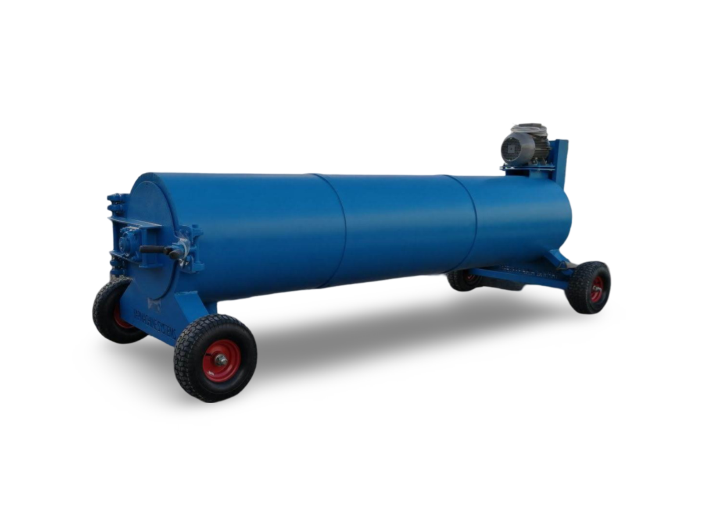

.jpg)
.jpg)
.jpg)
.jpg)
.jpg)
.jpg)
Centrifugeuse à tapis
- Fonctionnement très silencieux
- Rotor de 200 cm de long
- Rotor équilibré électroniquement
- Tuyau en acier inoxydable INOX sans soudure de 3 mm
- Anneau de renfort de roue
- 3 ans de garantie sur le rotor
- Joint de porte
- Charnières de porte boulonnées
- Système de roulement innovant
- Panneau de commande clair et simple
- Potentiomètre de temps de travail et marche arrière
- Fin de course protégeant contre le démarrage lorsque la porte est ouverte
- Poignée d'ouverture de porte améliorée
- Roues amovibles avec supports
- Possibilité d'insérer l'appareil à travers des portes étroites
- Corps de la centrifugeuse en acier épais, galvanisé à chaud
- Wrap de voiture avec des graphismes esthétiques facilitant l'entretien
- Documentation technique - Certificat CE et CE
- Moteur économique d'une puissance de 2,2 kW
Avantage
Données techniques
| Caractéristique | Détail |
|---|---|
| Largeur maximale du tapis | 2,0 m |
| Efficacité | 50 m²/heure |
| Longueur | 2350 mm |
| Largeur | 920 mm |
| Hauteur | 1000 mm |
| Balance | 250 kg |
| Diamètre du rotor | 320 mm |
| Diamètre du couvercle du rotor | 400 mm |
| Matériau du rotor | Acier inoxydable |
| Matériel | Galvanisé à chaud |
| Hauteur de chargement | 310 mm |
| Nombre de vidanges d'eau | 1 |
| Diamètre des évacuations d'eau | Ø75 mm |
| Type de suspension | Roues |
| Puissance du moteur | 2,2 kW |
| Régime moteur | 1100 tr/min |
| Connexion | 16A 5P 400V |
| Garantie | 12 mois |
| Garantie prolongée | NON |